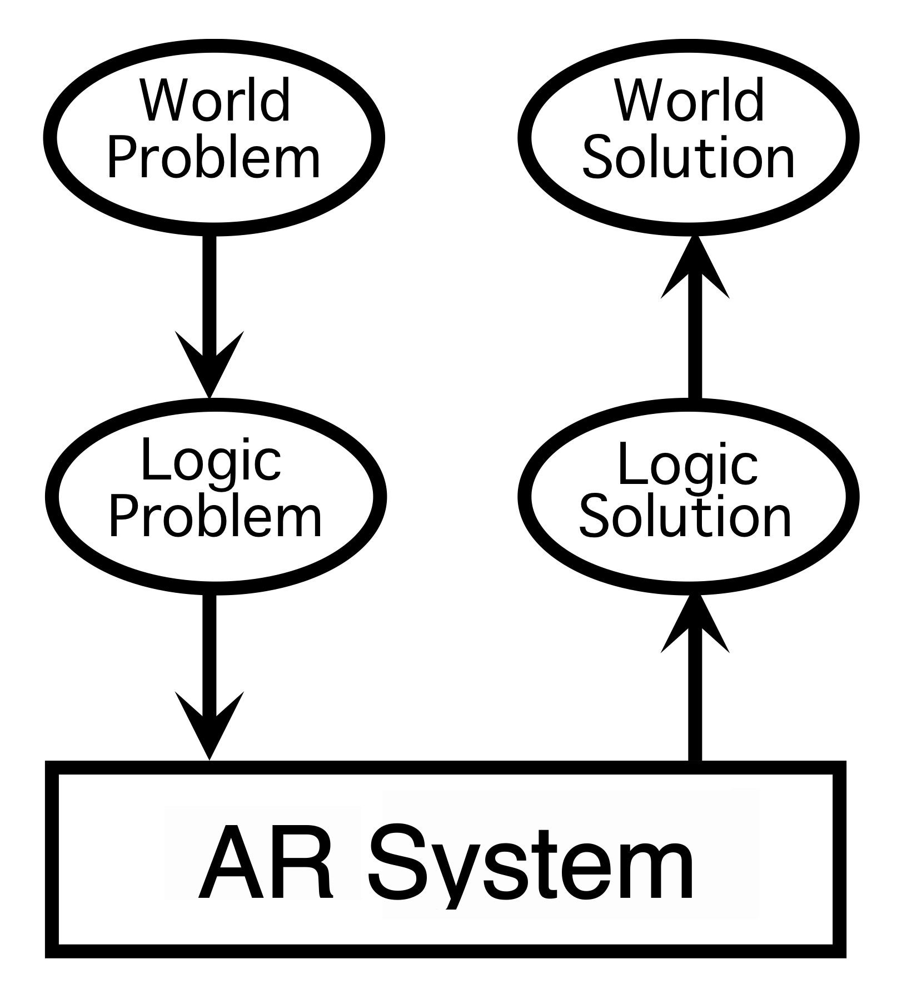

What is Automated Reasoning?

The World Has Problems
Automated Reasoning to the Rescue
- Translate world problem to logic
- Axioms describe what you know about the world
- Conjecture describes what need to be solved
- Use Automated Reasoning to get a logic solution
- Find a proof of the conjecture using the axioms
- Find a countermodel of the conjecture and the axioms
- Find a model of the axioms
- Translate logic solution to world solution
- A proof of the conjecture describes the solution
- A countermodel of the conjecture shows why there is no solution
- A model of the axioms shows they are consistent
Automated Reasoning Systems
- Automated Theorem Proving (ATP) systems are computer programs that (try to)
determine if
- A conjecture C is a logical consequence of a set of axioms Ax
The derivation of conclusions that follow inevitably from facts
- Automated Model Finding systems are computer programs that (try to) determine if
- A set of statements S is satisfiable
Testing the consistency of proposed facts